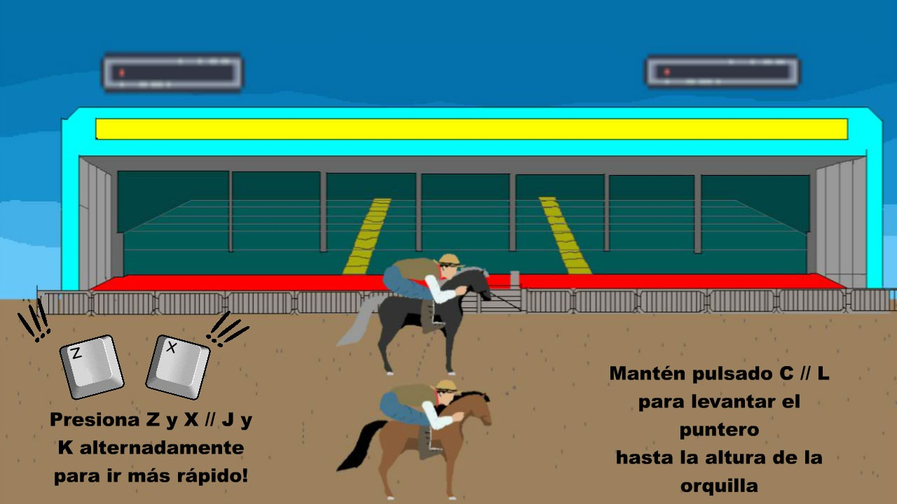

Portfolio
Agustín Alabarces
Programador, diseñador de juegos, librero, músico. Vive en Buenos Aires, Argentina. Estudiante de la Tecnicatura en Programación de Videojuegos en la Universidad Nacional de Hurlingham.
Saxofonista y compositor de música original para jueguitos.
Fulbacho

El Fulbacho es un juego de mesa basado en el fútbol argentino y juegos clásicos de avanzar
por el tablero comprando propiedades. En este caso lo que se compra son jugadores para mejorar
el equipo con el que se juegan partidos en una mezcla de deck-building y azar. Originalmente creado
en papel y cartulina, esta versión de Tabletopia es del 2020.
Jugar
Turtle vs Rabbit

El Turtle vs Rabbit es un juego creado por Odyssey Games. Fue un proyecto
para la materia Introducción a los Videojuegos de la carrera Tecnicatura en Programación de
Videojuegos de la Universidad Nacional de Hurlingham. Es un juego de plataformas en el que
manejamos a la tortuga e intentamos vencer a la liebre de la famosa fábula, utilizando
la astucia para suplir la velocidad.
Jugar
Horror Light

El Horror Light es un juego creado por Odyssey Games para la materia
Taller de Diseño Conceptual de Videojuegos de la carrera Tecnicatura en Programación de
Videojuegos de la Universidad Nacional de Hurlingham. Es un "survival horror" con vista isométrica
donde el protagonista debe evitar distintos monstruos mientras desentraña un horroroso misterio.
Jugar
Mundial Gaucho
El Mundial Gaucho es un juego creado por Odyssey Games para la GameJam+ 2023.
Es una compilación de minijuegos basados en los juegos clásicos guachescos y nacionales argentinos,
como el Sapo, la jineteada o las carreras cuadreras.
Jugar
Mail: aalabarces@gmail.com